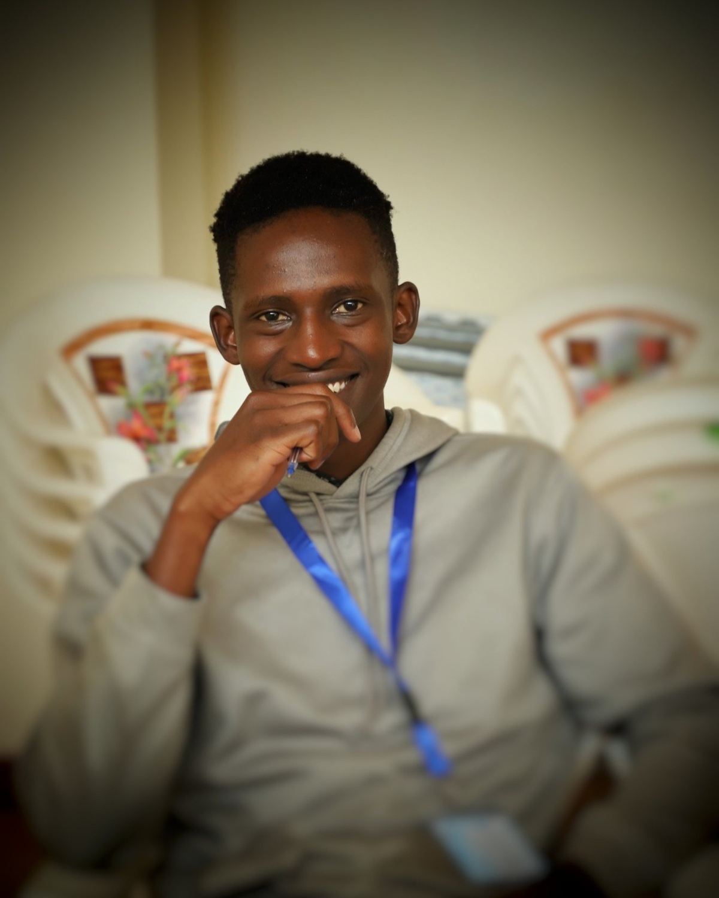

A little about me
Purpose behind the work. People behind the stories.

About Me
I am Ronie Arnold, a multimedia storyteller driven by the power of human-interest stories and meaningful communication.
I believe every person, community and experience has a story worth understanding. What interests me most is finding those stories, exploring the human experiences behind them and sharing them in ways that connect with people. I do this through writing, blogs, articles, vlogs, photography, videography and graphic design.
I take my work seriously. I value preparation, attention to detail, creativity and responsibility at every stage of a project. From conducting interviews and documenting real-life experiences to developing visual concepts, editing content and producing stories, I strive to deliver work that is thoughtful, accurate and purposeful.
My experience at AMPATH Public Health gave me practical exposure to communication in a professional environment. It strengthened my abilities in field documentation, editorial work, visual storytelling, public health communication and collaboration.
I am continuously learning, refining my craft and taking on opportunities that challenge me to grow. My goal is to create work that does more than capture attention: work that informs, builds understanding and brings people closer to the stories that matter.
How I approach my work
- Professionalism - Taking responsibility for the quality and delivery of my work.
- Creativity - Finding thoughtful ways to communicate ideas and experiences.
- Integrity - Respecting people, their experiences and the truth behind every story.
- Attention to detail - Being deliberate about preparation, execution and final presentation.
Let's connect
Interested in working together, discussing a story or exploring a creative opportunity? I'd be glad to hear from you.